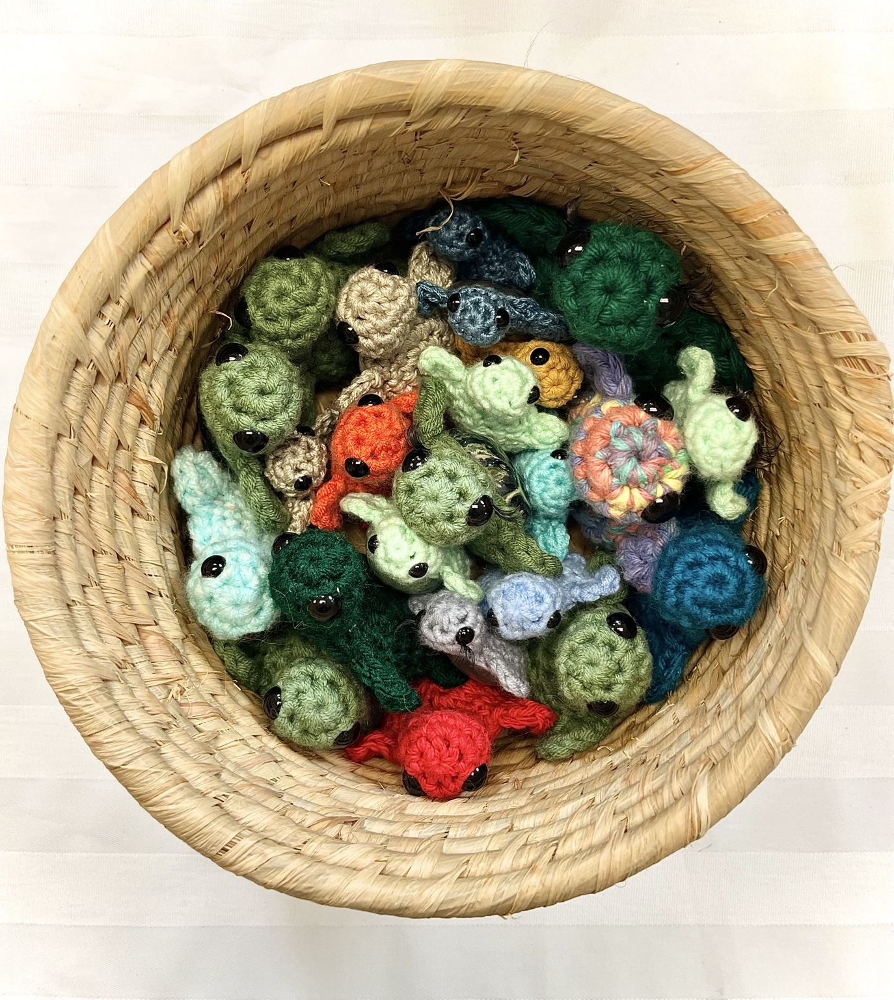

Made slowly, with care.
From the first stitch to the final detail, every companion is shaped by hand—not pulled from an assembly line.
Meet Jess’ handmade crochet turtles with genuine gemstone shells, silly personalities, and a whole lot of love stitched into every one.

I’m the hands behind the hooks, the love behind the turtles, and the slightly chaotic human who probably has yarn somewhere it absolutely shouldn’t be.
What started as a love of making things by hand has become a growing community of turtle lovers, crystal enthusiasts, and wonderful people giving these little companions homes.
Every tiny turtle is crocheted with love and paired with a genuine gemstone shell. No two are ever quite the same.
Read Jess’s Story ↗Tiny creatures with big character. Each one is thoughtfully crocheted and paired with a stone that makes it uniquely its own.
From the first stitch to the final detail, every companion is shaped by hand—not pulled from an assembly line.
Natural stones bring colour, texture and individuality. The little variations are part of the beauty.
Every companion has a unique name, three things they love, and one thing they really don't.
When a Crystal Companion finds a home, their story doesn't end there. We're creating a special registry where companions can be remembered by name, personality and the people who welcome them.
Our public adoption registry is coming in a future chapter of Stitch & Stone.
Follow the story ↗Every companion will have a page of their own.
Crystal Companions aren't just made to sit on a shelf. They're made to be part of the story.
Out in the world
Adventures big and smallMade with love
Behind the stitchesFinding home
Companions and their peopleLifestyle and adventure photography will go here—no Whatnot listing photos.
Every adoption means the world to Jess. Read what fellow turtle lovers are saying on Whatnot.
Read our Whatnot reviews ↗Customer-approved testimonials will be featured here soon.
Our online shop is on its way. Until then, follow along as the world of Crystal Companions grows.
Ask about Crystal Companions ↗Shopify “Buy now” link will be connected when the store launches.